The Fentner & McGuire Families
Germany → Massachusetts • County Sligo → Hartford, Connecticut
My father spent years quietly researching our family's origins on both sides — the Fentners, who came from Germany and settled in the Berkshires of Massachusetts, and the McGuires and Goldricks, who survived the Irish Famine, the Black and Tans, and the Atlantic crossing to build a new life in Hartford, Connecticut. What follows is drawn from his files, his correspondence, census records, a genealogy database he assembled in 2002, and a remarkable oral history from County Sligo collected in 2000.
Much of the Irish-side research was done in collaboration with Jim Celio, a cousin in Orlando, Florida, who traced Catherine Goldrick McGuire's story back to the shore of Lake Tault in the townland of Gortersluin.
German The Fentner Line
The Fentner family came from Germany, crossing the Atlantic sometime before the 1860s. By 1880 they had settled in Stockbridge, Berkshire County, Massachusetts, where they worked in the woolen mills. The 1880 U.S. Census records the family at Stockbridge:
John Fentner Patriarch
Occupation: Works in Woolen Mill. Married Henriette (born ~1844, Germany). Both immigrated from Germany; their eldest children were born in Germany, while the younger ones were born in Massachusetts, marking the generation of the crossing.
Their Children (1880 Census, Stockbridge, MA)
The genealogy data was compiled from the International Genealogical Index via FamilySearch in October 2002. The GED file my father created is preserved on this drive.
Irish The McGuire & Goldrick Line
The Irish side of the family runs through County Sligo in the west of Ireland — a region that endured some of the worst devastation of the Great Famine — to Hartford, Connecticut, where Catherine Goldrick arrived in 1902 and built a family of fifteen children.
"It looks like we dodged a bullet on this one. Sligo was our Grandmother, Catherine Goldrick McGuire's home. The famine occurred about the time her parents were born." — John Benz Fentner, Jr., on the Great Famine in Sligo
The Land: Gortersluin, County Sligo
The Goldrick family lived in the townland of Gortersluin (also spelled Gortesluin) in the parish of Kilmacteigue, County Sligo — about 1,100 acres on the slopes of the Ox Mountains, near the road between Tubbercurry and Ballina. The land sits beside Lake Tault, where Neolithic people once built stilt houses, and where Celtic monasteries from the 600s and Norman castles from the 1200s still stand nearby.
The townland had been controlled by the O'Hara clan before Oliver Cromwell's forces arrived in the 1690s. Catholics were then barred from owning land; the Goldrick land passed to a Mrs. Irwin, whose family had received it from a Cromwellian officer. The Goldricks remained as tenants for generations, until the Irish land reform movement of the 1880s forced landlords to sell to their tenants.
"Beul an ath Graugh — which means 'the mouth of the ford of the slaughter' — is situated in Goldrick's land. It was known as a battlefield from many years ago. It is believed that the blood used to flow into the river, turning the water red." — Mary Carty, 81, oral history interview, Gortersluin, 2000
James Goldrick — The Grandfather
James Goldrick, Catherine's grandfather, was a tenant farmer in Gortersluin. His generation lived through the cholera epidemic of 1832 (which killed roughly a third of the local population) and witnessed the Great Famine of 1845–1848. A mass grave near the Goldrick home holds victims of both catastrophes. There is a mass path through the woods nearby where families walked to church for generations.
Catherine "Katie" Goldrick Great-Grandmother
The third of six children born to Patrick Goldrick and Mary Preston. Katie grew up in a two-room stone cottage with a thatched roof, cooking over a turf fire, speaking English (though her grandparents spoke only Gaelic). She attended the local National School and could read and write.
After her father Patrick died in May 1902 — cause listed as rheumatism, though no doctor attended — the farm could no longer support the family. In September 1902, Katie boarded a train in Tubbercurry for Queenstown (now Cobh), County Cork. On the 25th, she sailed for America aboard the Majestic, one of the White Star Line's first modern ocean liners.
She joined her sister Margaret in Hartford, Connecticut, found work as a housemaid near Farmington Avenue, and rode the trolley to work each day. In 1904 she met the trolley operator: William James McGuire.
William James McGuire Great-Grandfather
A veteran of the Boer War in South Africa, William served twelve years in the Royal Irish Fusiliers — an Irish regiment of the British Army — before immigrating to Hartford in 1904. He became a trolley operator, then worked for the Hartford Rubber Works as a machinist helper for many years.
William and Catherine married around 1905. They became U.S. citizens in 1919, raised fifteen children (ten survived childhood), and lived in Hartford, Granby, and West Hartford, Connecticut. William died in 1951; Catherine in 1964. They are buried together at Rose Hill Cemetery, Rocky Hill, Connecticut.
Timeline: The Irish Side
Oral History: Gortersluin, 2000
In 2000, researchers Bernie Meehan and Susan Heneghan interviewed Mary Carty, age 81, who was born and raised in Gortersluin — the same townland where the Goldricks lived. Jim Celio found this interview and shared it with the family by email in August 2006, noting that if Mary was born around 1919, our great-grandmother Mary Preston Goldrick may still have been living there at the time.
Mary's account describes the geography, folk memory, and daily life of the townland in extraordinary detail:
"A particular house that was well known for its poteen making was once raided by the police. The poteen was buried in jars in the ditch. Ann, the lady of the house, sat on the ditch at her ease, knitting — the poteen being buried under her. While the police were raiding the house it never dawned on them that she was guarding it." — Mary Carty, Gortersluin, 2000
"There was a man-made tunnel leading from Gortersluin to Castlerock and it was said the slabs used were enormous and the men must have been as strong as giants in order to carry them." — Mary Carty, Gortersluin, 2000
There is also a graveyard called Kill Na gCailín in the nearby townland of Drumartin, where old beggars and unbaptised children were buried, identified by upright stones and flagstones. The last person buried there was "a beggar woman from Masshill, whose remains were carried by a group of men on a moonlit night."
Family Photographs
These photographs were found on my father's backup drive. Many are undated or unidentified — if you recognize someone, please get in touch.

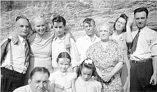
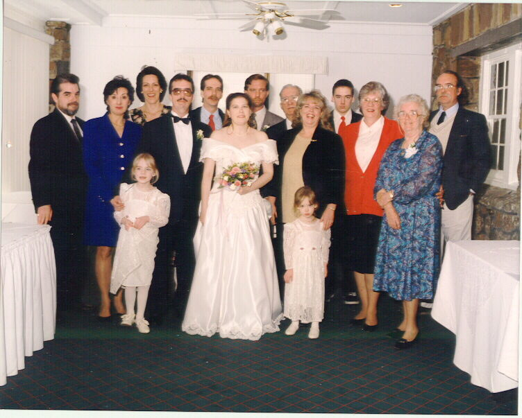
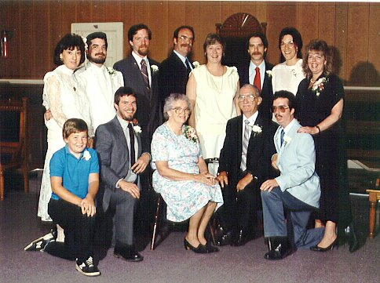
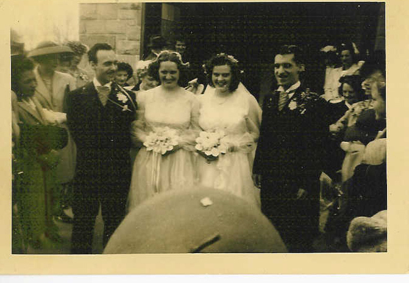
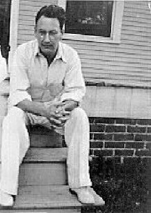
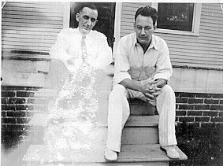
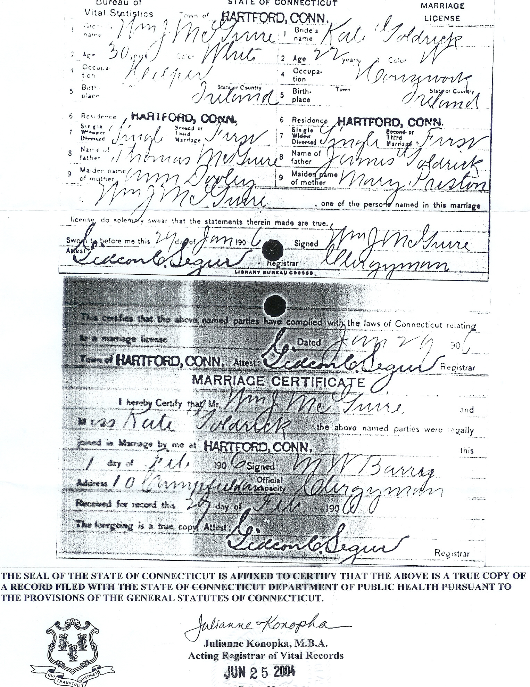
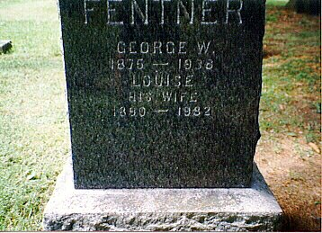
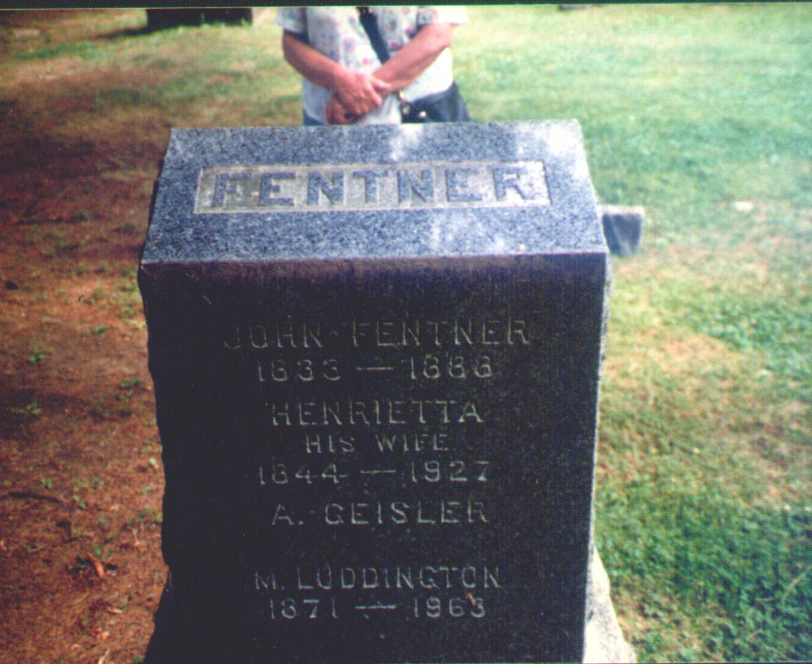
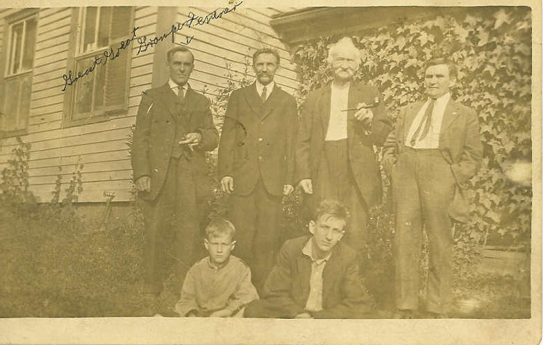
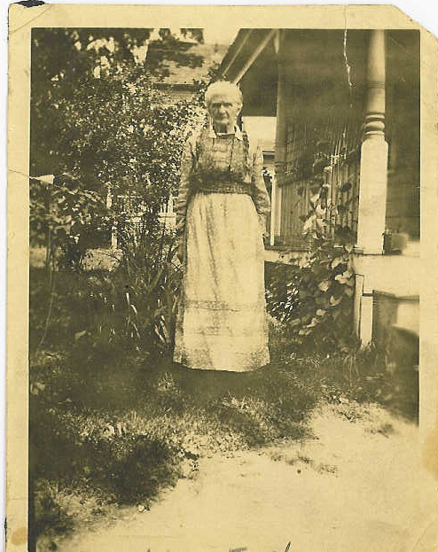
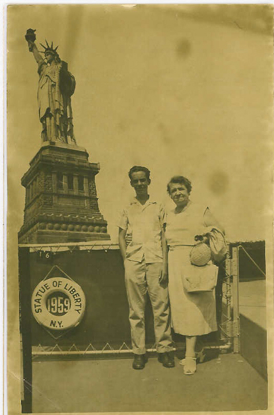
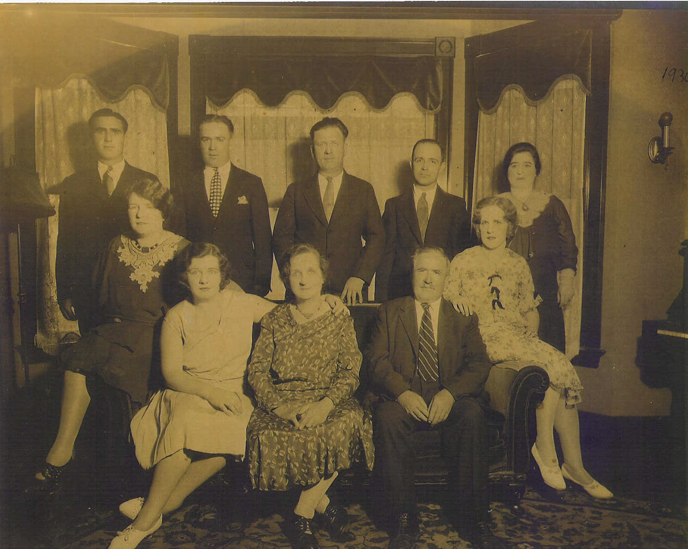